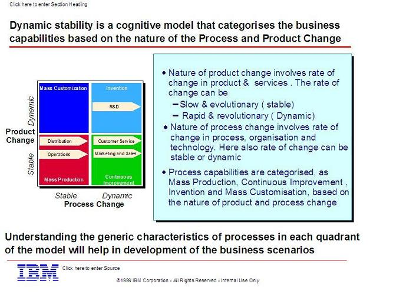
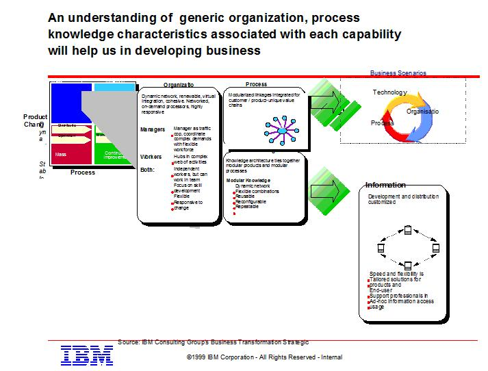
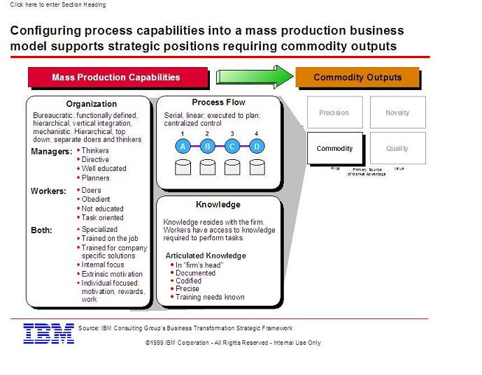

Brief assessment resulting from e-strategy value net analysis:
Method of completion:
-
Use the Value Exchange Analysis Guide in workshops and/or work sessions with core team members and other
knowledgeable individuals (extended team) to create value nets for each customer or audience.
-
For each value net, explore relationships and interactions between players.
-
Identify and document potential e-business opportunities to strengthen the company's position and leverage.
-
For each opportunity, identify supporting capabilities.
-
Assess each capability's strengths and weaknesses.
Primary sources of information
-
Focal areas and Value Nets from “Killer e” Workshop (see Business Environment Work Product & Competitive Focus
DB)
-
Output from Context Analysis (Markets, Customers, Competitors, etc. - see Strategic Market Position work product
and Competitive Focus DB)
One can also use the dynamic stability model as a tool to assess capabilities:



|